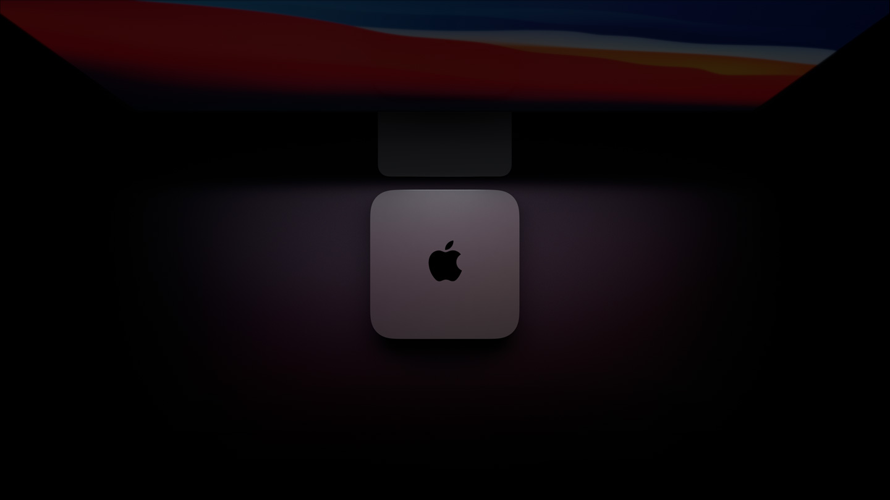
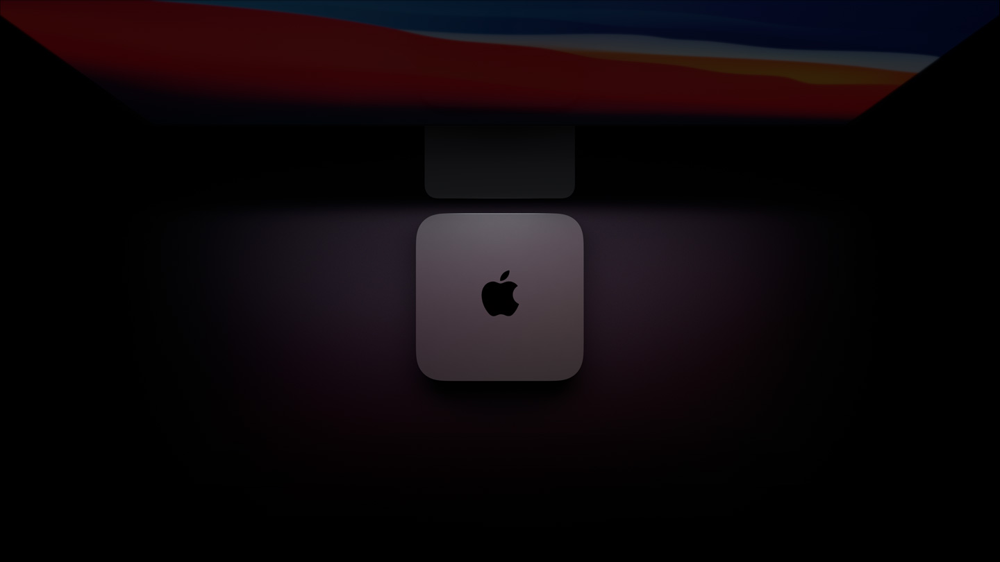

CPU
CPU de 8 núcleos Ultrapoderoso. Ultracompacto.
El chip M1 le da mucha más potencia y velocidad a la Mac mini. El CPU de 8 núcleos tiene una velocidad de procesamiento hasta 3 veces mayor que la de la generación anterior2, sin modificar su icónico diseño cuadrado de 19.7 cm.